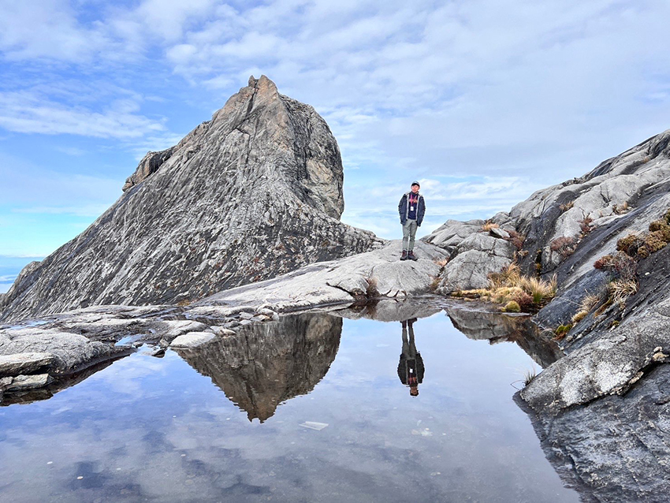
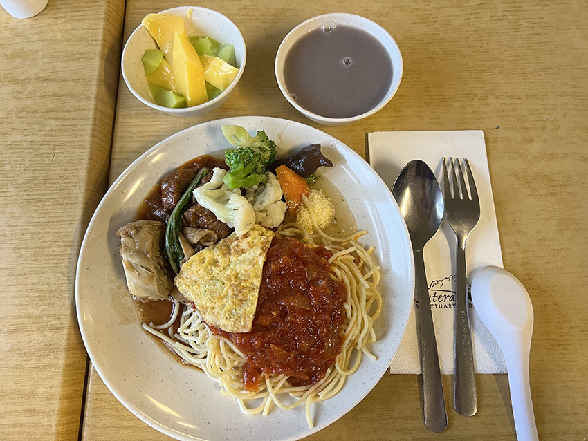
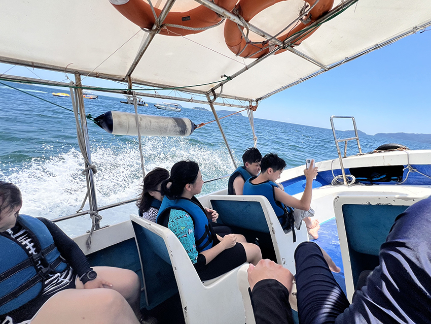
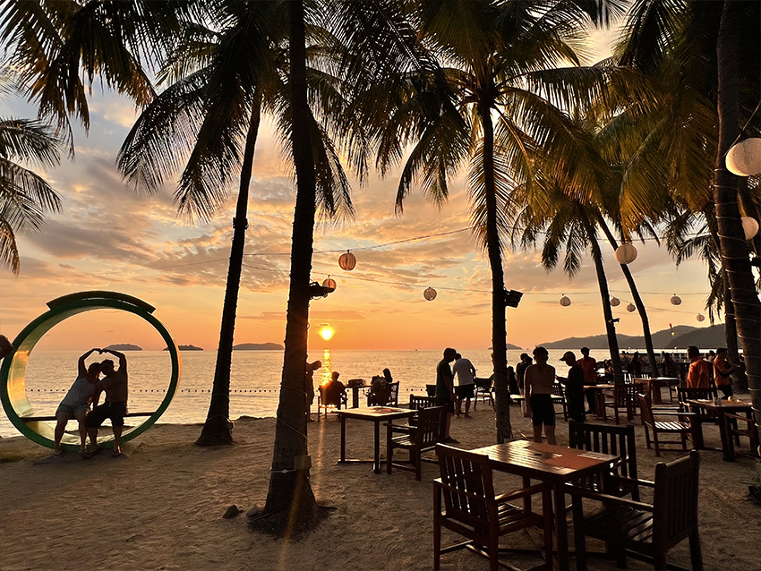
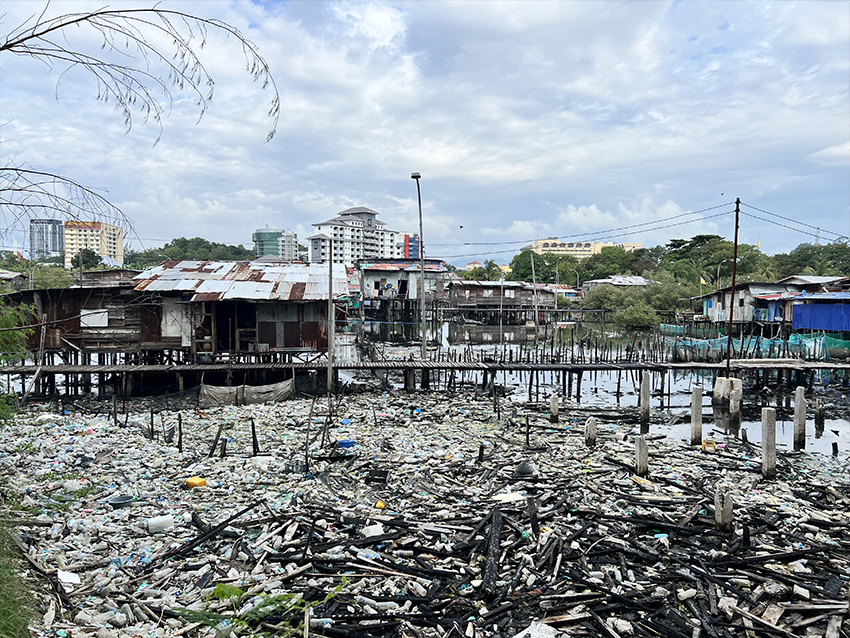
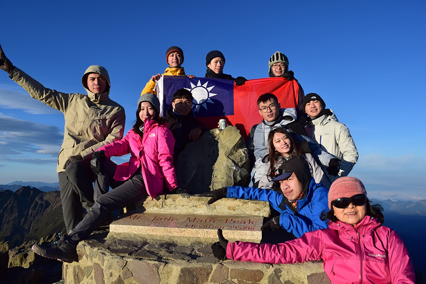
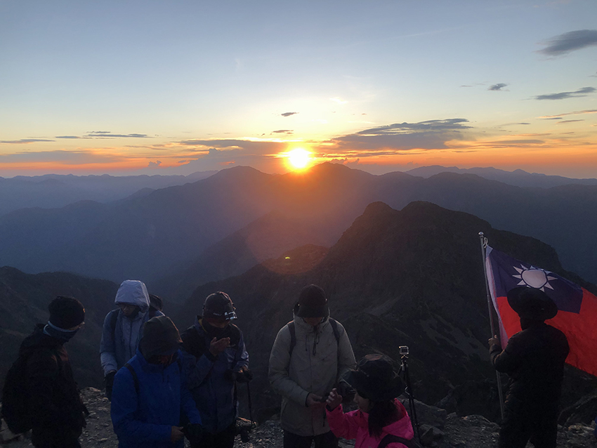
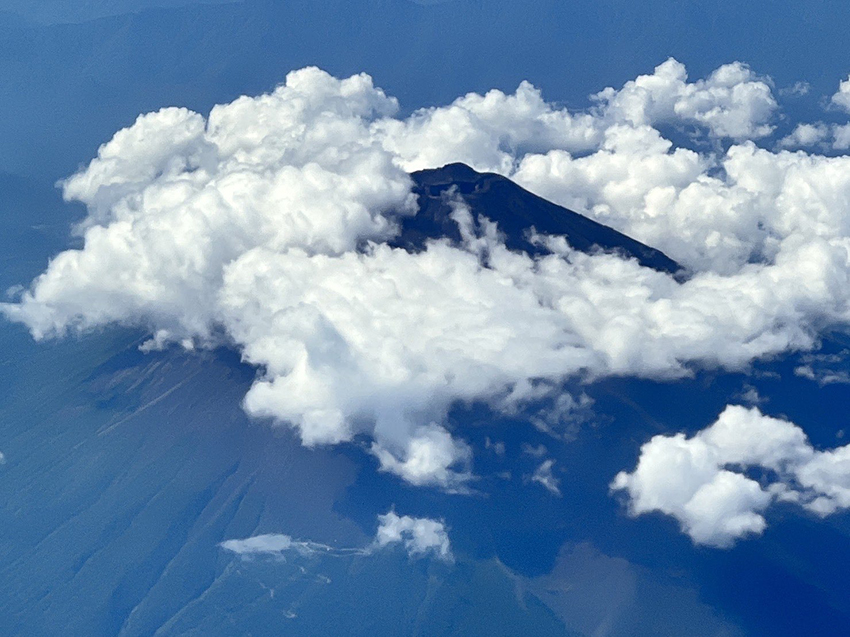
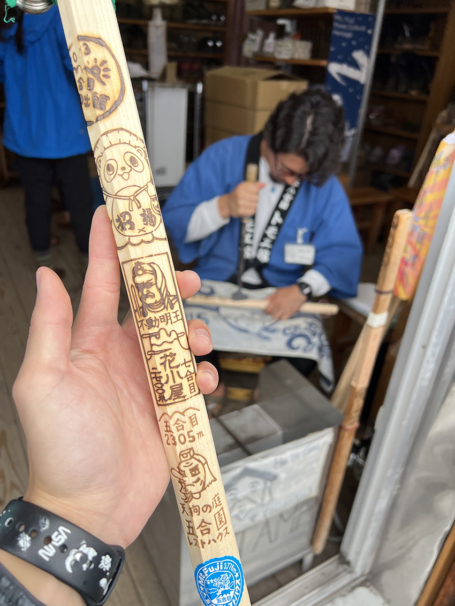
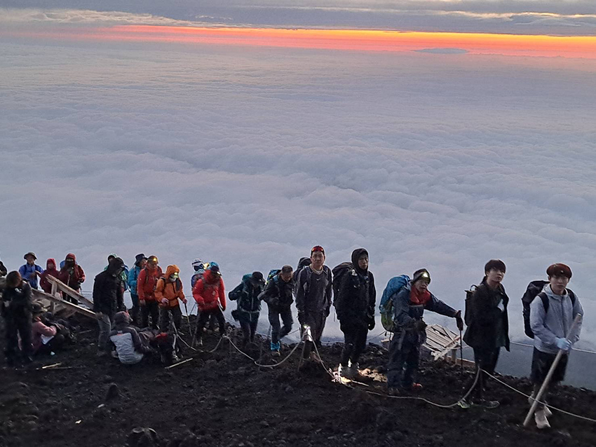

東亞有三山，一神二玉三富士，也就是馬來西亞神山、台灣玉山、日本富士山，這三座山都是在地人認為此生必爬的當地最高峰，身為一個喜愛登山的人，歷經了3年，我也終於把這三座鼎鼎大名的山給攻略。
馬來西亞神山（海拔4,095m）
馬來西亞神山又稱京那巴魯山，是馬來西亞境內最高峰，攀登路線單程8.5km，路線雖不長，但海拔由1,866m攀升到4,095m，上下落差高度達2,200m，安排兩天的行程會比較合適。每五位攀登者需聘請一位嚮導，嚮導們基本上都是在地原住民，也肩負著協作的工作，以公斤計費 RM14/KG，跟台灣協作比起來算是相當的便宜，大部分也都可以用英文溝通。
攀登路線規劃得很完善，就算下著雨，地上也不會滑。兩天的行程中，第一天會先爬到山屋住宿一晚，隔天再攻頂，需要注意的是7k check point如果下雨就不會讓登山客通過，我們第二天就差點上不去，還好後來雨停了。7k check point之前大多都是樓梯地形、之後都是陡上的花崗岩地形，登頂時雖然看起來有點陡，但實際走起來其實蠻穩的。
休息區、山屋等人潮聚集處都連的到網路。Pendant Hut山屋的床很好睡，附有熱水、枕頭、床墊、睡袋（沒有霉味）、洗手台、廁所、浴室，山屋旁甚至還有一間豪華的大餐廳，餐廳有人員幫忙打菜，菜色種類非常豐富，主食、配菜、湯品、飲料、甜點都是吃到飽，是一種在台灣爬山不曾有過的體驗。
|  |
|  |
爬完山的隔天，我們來到Pulau Mamutik跳島，騎水上摩托車、玩拖曳傘、浮潛、helmet diving，意外的是原先我只是找船長一起合照，結果他就請我去試試看開船，可見在地人實在非常熱情，最後我們回到沙巴喝酒看夕陽，結束這一趟上山下海的旅程。
|  |
|  |
|  |
台灣玉山（海拔3,952m）
台灣境內最高峰，爬玉山也被視為台灣人此生必做的三件事之一，幾年前因緣際會被同事邀請一起攀登，當時對於台灣百岳一無所知，爬得當下只覺得好累。沒想到隔了一年後，卻讓我開始懷念起登山的感覺，漸漸開啟我的百岳之旅，跟著山友們完成了一座又一座的百岳，也讓自己愛上了登山。
|  |
|  |
日本富士山（海拔3,776m）
一年只開放2個月登山，山屋需提前預定，許多來自世界各地的人們，都專門來解鎖這個日本最高峰。我們在路上遇到了日本幼稚園老師帶著小朋友來遠足，小朋友們還很禮貌的跟我們打招呼，或許富士山在日本人心中的地位就是這樣從小養成的吧！
人生第一次出國爬山，這次走吉田路線，如願的看到超厚的雲海以及御來光，也成功完登了富士山劍峰，日本山屋如耳聞的一樣，非常完善，沿路也有很多店家在賣水以及食物，最一開始的路段甚至還可以騎馬上山，算是非常親民的登山路線。
起登時，可以在五合目的商店買根金剛棒，沿路到九合目（及頂上）的路上挑個幾間山屋各烙一個印，整根金剛棒烙滿印後，用來當作完登的紀念品，或是在頂上郵局買個明信片，寄回去給自己，整體來說是蠻舒服的登山行程。
|  |
|  |
|  |